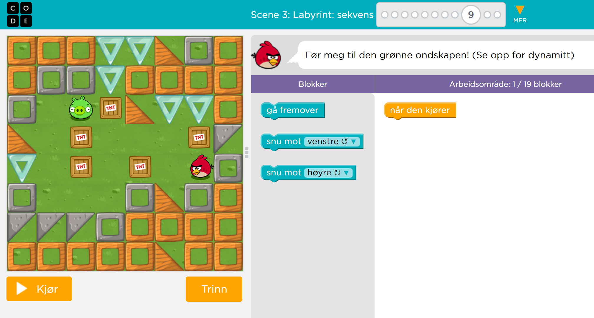
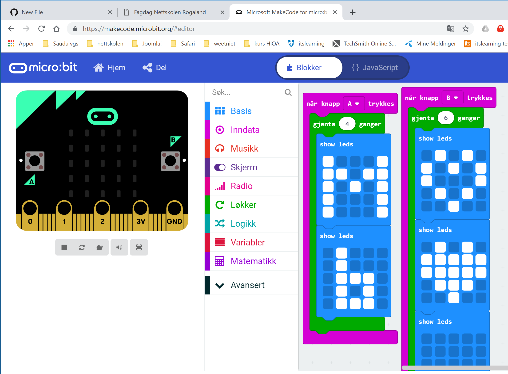
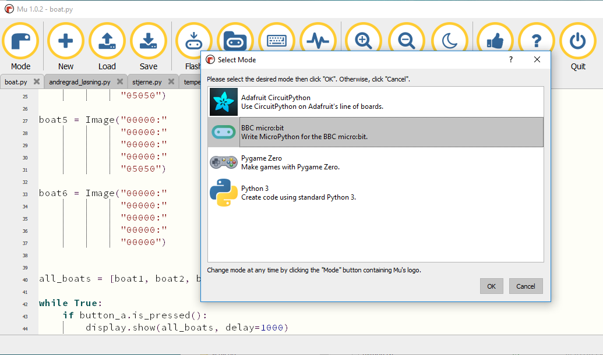

Minikurs Sauda vgs (10.april 2019)
Grunnleggende informasjon om muligheten ved koding i undervisningen
Program:
- Introduksjon
- Karrusell 1 (nivå 1): Blocky (Angry bird ol.)
- Karrusell 2 (nivå 2): Scotty Go!
- Karrusell 3 (nivå 3): Microbit
- Karrusell 4 (nivå 4): Python
- Oppsummering
Introduksjon
Learning by doing. Hvorfor programmering og programfag Informasjonsteknologi?
Kort gjennomgang i forskjellige karruseller.
Tilbake til tops
Karrusell 1: Blocky (Angry bird ol.)
Klikk her for å starte.
Oppgave: gå gjennom forskjellige oppgaver. Ikke ta alle, hopp over noen...

Tilbake til tops
Karrusell 2: Scotty Go!
Kombinasjon av bordspillet og teknologi.
Tilbake til tops
Karrusell 3: Microbit
Instruer en veldig enkel robot. Klikk her
for å komme i gang med Microsoft's Make your code.

2 eksempler: Microbit og Inventors Kit.
Tilbake til tops
Karrusell 4: Python
Klikk her for å komme i gang med en online python interpreter.
Python kan også bli brukt til å programmere microbit. Derfor trenger du å laste ned Mu programvare på din data.

Klikk her for å laste ned Mu
Tilbake til tops
Oppsummering